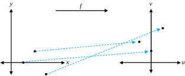
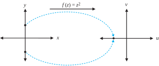

A complex-valued function \(f\) of the complex variable \(z\) is a rule that assigns to each complex number \(z\) in a set \(D\) one and only one complex number \(w\text{.}\) We write \(w=f(z)\) and call \(w\) the image of\(z\) under \(f\text{.}\) A simple example of a complex-valued function is given by the formula \(w=f(z)=z^2\text{.}\) The set \(D\) is called the domain of \(f\text{,}\) and the set of all images \(\{w=f(z) :z \in D \}\) is called the range of \(f\text{.}\) When the context is obvious, we omit the phrase complex-valued, and simply refer to a function \(f\text{,}\) or to a complex function \(f\text{.}\)
We can define the domain to be any set that makes sense for a given rule, so for \(w=f(z)=z^2\text{,}\) we could have the entire complex plane for the domain \(D\text{,}\) or we might artificially restrict the domain to some set such as \(D=D_1(0)=\{z:|z|\lt 1\}\text{.}\) Determining the range for a function defined by a formula is not always easy, but we will see plenty of examples later on. In some contexts functions are referred to as mappings or transformations.
In Section 1.6, we used the term domain to indicate a connected open set. When speaking about the domain of a function, however, we mean only the set of points on which the function is defined. This distinction is worth noting, and context will make clear the use intended.
Just as \(z\) can be expressed by its real and imaginary parts, \(z=x+iy\text{,}\) we write \(f(z)=w=u+iv\text{,}\) where \(u\) and \(v\) are the real and imaginary parts of \(w\text{,}\) respectively. Doing so gives us the representation
Because \(u\) and \(v\) depend on \(x\) and \(y\text{,}\) they can be considered to be real-valued functions of the real variables \(x\) and \(y\text{;}\) that is,
\begin{equation*}
u=u(x, y) \text{ and } v=v(x, y)\text{.}
\end{equation*}
Combining these ideas, we often write a complex function \(f\) in the form
so that \(u(x,y) = 2x^2-y^2+y\) and \(v(x,y) = xy\text{.}\)
Examples 2.1.2 and Example 2.1.3 show how to find \(u(x,y)\) and \(v(x,y)\) when a rule for computing \(f\) is given. Conversely, if \(u(x,y)\) and \(v(x,y)\) are two real-valued functions of the real variables \(x\) and \(y\text{,}\) they determine a complex-valued function \(f(x,y) = u(x,y) +iv(x,y)\text{,}\) and we can use the formulas
\begin{equation*}
x=\frac{z+\overline{z}}{2} \text{ and } =\frac{z-\overline{z}}{2i}
\end{equation*}
to find a formula for \(f\) involving the variables \(z\) and \(\overline{z}\text{.}\)
Example2.1.4.
Express \(f(z) =4x^2+i4y^2\) by a formula involving the variables \(z\) and \(\overline{z}\text{.}\)
where \(u\) and \(v\) are real functions of the real variables \(r\) and \(\theta\text{.}\)
Remark2.1.5.
For any specific function \(f\text{,}\) the functions \(u\) and \(v\) defined here will be different from those of Equation (2.1.1) because Equation (2.1.1) involves Cartesian coordinates and Equation (2.1.2) involves polar coordinates.
Example2.1.6.
Express \(f(z) =z^2\) in both Cartesian and polar form.
Solution.
For the Cartesian form, a simple calculation gives
\begin{equation*}
U(r,\theta) =r^2\cos2\theta \text{ and } V(r,\theta) =r^2\sin2\theta
\end{equation*}
Once we have defined \(u\) and \(v\) for a function \(f\) in Cartesian form, we must use different symbols if we want to express \(f\) in polar form. As is clear here, the functions \(u\) and \(U\) are quite different, as are \(v\) and \(V\text{.}\) Of course, if we are working only in one context, we can use any symbols we choose.
We now look at the geometric interpretation of a complex function. If \(D\) is the domain of real-valued functions \(u(x, y)\) and \(v(x, y)\text{,}\) the equations
\begin{equation*}
u=u(x,y) \text{ and } v=v(x,y)
\end{equation*}
describe a transformation (or mapping) from \(D\) in the \(xy\) plane into the \(uv\) plane, also called the \(w\) plane. Therefore, we can also consider the function
to be a transformation (or mapping) from the set \(D\) in the \(z\) plane onto the range \(R\) in the \(w\) plane. This idea was illustrated in Figure 2.1.1. In the following paragraphs we present some additional key ideas. They are staples for any kind of function, and you should memorize all the terms in bold.
If \(A\) is a subset of the domain \(D\) of \(f\text{,}\) the set \(B=\{f(z) : z \in A\}\) is called the image of the set \(A\text{,}\) and \(f\) is said to map \(A\) onto \(B\text{.}\) The image of a single point is a single point, and the image of the entire domain, \(D\text{,}\) is the range, \(R\text{.}\) The mapping \(w=f(z)\) is said to be from \(A\) into \(S\) if the image of \(A\) is contained in \(S\text{.}\) Mathematicians use the notation \(f:A\longmapsto S\) to indicate that a function maps \(A\) into \(S\text{.}\)
Figure 2.1.8 illustrates a function \(f\) whose domain is \(D\) and whose range is \(R\text{.}\) The shaded areas depict that the function maps \(A\)onto\(B\text{.}\) The function also maps \(A\)into\(R\text{,}\) and, of course, it maps \(D\)onto\(R\text{.}\)
The inverse image of a point \(w\) is the set of all points \(z\) in \(D\) such that \(w=f(z)\text{.}\) The inverse image of a point may be one point, several points, or nothing at all. If the last case occurs then the point \(w\) is not in the range of \(f\text{.}\) For example, if \(w=f(z) =iz\text{,}\) the inverse image of the point \(-1\) is the single point \(i\text{,}\) because \(f(i)=i(i)=-1\text{,}\) and \(i\) is the only point that maps to \(-1\text{.}\) In the case of \(w=f(z) =z^2\text{,}\) the inverse image of the point \(-1\) is the set \(\{i,-i\}\text{.}\) You will learn in Chapter 5 that, if \(w=f(z)=e^z\text{,}\) the inverse image of the point \(0\) is the empty set—there is no complex number \(z\) such that \(e^z=0\text{.}\)
The inverse image of a set of points, \(S\text{,}\) is the collection of all points in the domain that map into \(S\text{.}\) If \(f\) maps \(D\) onto \(R\) it is possible for the inverse image of \(R\) to be function as well, but the original function must have a special property: a function \(f\) is said to be one-to-one if it maps distinct points \(z_1 \ne z_2\) onto distinct points \(f(z_1) \ne f(z_2)\text{.}\) Many times an easy way to prove that a function \(f\) is one-to-one is to suppose \(f(z_1)=f(z_2)\text{,}\) and from this assumption deduce that \(z_1\) must equal \(z_2\text{.}\) Thus, \(f(z)=iz\) is one-to-one because if \(f(z_1)=f(z_2)\text{,}\) then \(iz_1=iz_2\text{.}\) Dividing both sides of the last equation by \(i\) gives \(z_1=z_2\text{.}\)Figure 2.1.9 illustrates the idea of a one-to-one function: distinct points get mapped to distinct points.

Figure2.1.9.A one-to-one function
The function \(f(z) =z^2\)is not one-to-one. This is because \(-i \ne i\text{,}\) but \(f(i)=f(-i)=-1\text{.}\)Figure 2.1.10 illustrates this situation: at least two different points get mapped to the same point.

Figure2.1.10.A function that is not one-to-one
In the exercises we ask you to demonstrate that one-to-one functions give rise to inverses that are functions. Loosely speaking, if \(w=f(z)\) maps the set \(A\) one-to-one and onto the set \(B\text{,}\) then for each \(w\) in \(B\) there exists exactly one point \(z\) in \(A\) such that \(w=f(z)\text{.}\) For any such value of \(z\) we can take the equation \(w=f(z)\) and “solve” for \(z\) as a function of \(w\text{.}\) Doing so produces an inverse function \(z=g(w)\) where the following equations hold:
\begin{align}
g\big(f(z)\big) \amp =z \text{ for all } z\in A \text{ and }\notag\\
f\big(g(w)\big) \amp =w \text{ for all } w \in B\text{.}\tag{2.1.3}
\end{align}
Conversely, if \(w=f(z)\) and \(z=g(w)\) are functions that map \(A\) into \(B\) and \(B\) into \(A\text{,}\) respectively, and Equations (2.1.3) hold, then \(f\) maps the set \(A\) one-to-one and onto the set \(B\text{.}\)
Further, if \(f\) is a one-to-one mapping from \(D\) into \(T\text{,}\) and if \(A\) is a subset of \(D\text{,}\) then \(f\) is a one-to-one mapping from \(A\) onto its image \(B\text{.}\) We can also show that, if \(\zeta=f(z)\) is a one-to-one mapping from \(A\) onto \(B\) and \(w=g(\zeta)\) is a one-to-one mapping from \(B\) onto \(S\text{,}\) then the composite mapping \(w=g\big(f(z)\big)\) is a one-to-one mapping from \(A\) onto \(S\text{.}\)
We usually indicate the inverse of \(f\) by the symbol \(f^{-1}\text{.}\) If the domains of \(f\) and \(f^{-1}\) are \(A\) and \(B\text{,}\) respectively, we can rewrite Equations (2.1.3) as
\begin{align}
f^{-1}\big(f(z)\big) \amp =z \text{ for all } z \in A \text{ and }\notag\\
f\big(f^{-1}(w)\big) \amp = w \text{ for all } w \in B\text{.}\tag{2.1.4}
\end{align}
If \(w=\)\(f(z)=iz\) for any complex number \(z\text{,}\) find \(f^{-1}(w)\text{.}\)
Solution.
We can easily show \(f\) is one-to-one and onto the entire complex plane. We solve for \(z\text{,}\) given \(w=f(z)=iz\text{,}\) to get \(z=\frac{w}{i}=-iw\text{.}\) By Equations (2.1.5), this result implies that \(f^{-1}(w)=-iw\) for all complex numbers \(w\text{.}\)
Remark2.1.12.
Once we have specified \(f^{-1}(w)=-iw\) for all complex numbers \(w\text{,}\) we note that there is nothing magical about the symbol \(w\text{.}\) We could just as easily write \(f^{-1}(z)=-iz\) for all complex numbers \(z\text{.}\)
We now show how to find the image \(B\) of a specified set \(A\) under a given mapping \(u+iv=w=f(z)\text{.}\) The set \(A\) is usually described with an equation or inequality involving \(x\) and \(y\text{.}\) Using inverse functions, we can construct a chain of equivalent statements leading to a description of the set \(B\) in terms of an equation or an inequality involving \(u\) and \(v\text{.}\)
Example2.1.13.
Show that the function \(f(z)=iz\) maps the line \(y=x+1\) in the \(xy\) plane onto the line \(v=-u-1\) in the \(w\) plane.
Solution.
(Method 1): With \(A=\{(x,y):y=x+1\}\text{,}\) we want to describe \(B=f(A)\text{.}\) We let \(z=x+iy \in A\) and use Equations (2.1.5) and Example 2.1.11 to get
where \(\Longleftrightarrow\) means “{if and only if}.” PARAGRAPH Note what this result says: \(u+iv=w \in B \Longleftrightarrow v=-u-1\text{.}\) The image of \(A\) under \(f\text{,}\) therefore, is the set \(B=\{(u,v):v=-u-1\}\text{.}\) PARAGRAPH (Method 2): We write \(u+iv=w=f(z) =i(x+iy)=-y+ix\) and note that the transformation can be given by the equations \(u=-y\) and \(v=x\text{.}\) Because \(A\) is described by \(A=\{x+iy:y=x+1\}\text{,}\) we can substitute \(u=-y\) and \(v=x\) into the equation \(y=x+1\) to obtain \(-u=v+1\text{,}\) which we can rewrite as \(v=-u-1\text{.}\) If you use this method, be sure to pay careful attention to domains and ranges.
We now look at some elementary mappings. If we let \(B=a+ib\) denote a fixed complex constant, the transformation
\begin{equation*}
w = T(z) = z+B = x+a+i(y+b)
\end{equation*}
is a one-to-one mapping of the \(z\) plane onto the \(w\) plane and is called a translation. This transformation can be visualized as a rigid translation whereby the point \(z\) is displaced through the vector \(B=a+ib\) to its new position \(w=T(z)\text{.}\) The inverse mapping is given by
\begin{equation*}
z = T^{-1}(w) = w-B = u-a+i(v-b)
\end{equation*}
and shows that \(T\) is a one-to-one mapping from the \(z\) plane onto the \(w\) plane. The effect of a translation is depicted in Figure 2.1.14.
is a one-to-one mapping of the \(z\) plane onto the \(w\) plane and is called a rotation. It can be visualized as a rigid rotation whereby the point \(z\) is rotated about the origin through an angle \(\alpha\) to its new position \(w=R(z)\text{.}\) If we use polar coordinates and designate \(w=\rho ^{i\phi}\) in the \(w\) plane, then the inverse mapping is
The ellipse centered at the origin with a horizontal major axis of four units and vertical minor axis of two units can be represented by the parametric equation
\begin{equation*}
s(t)=2\cos t+i\sin t=(2\cos t,\,\sin t) \text{ for } 0 \le t \le 2\pi\text{.}
\end{equation*}
Suppose that we wanted to rotate the ellipse by an angle of \(\pi /6\) radians and shift the center of the ellipse 2 units to the right and 1 unit up. Using complex arithmetic, we can easily generate a parametric equation \(r(t)\) that does so:
is a one-to-one mapping of the \(z\) plane onto the \(w\) plane and is called a magnification. If \(K>1\text{,}\) it has the effect of stretching the distance between points by the factor \(K\text{.}\) If \(K\lt 1\text{,}\) then it reduces the distance between points by the factor \(K\text{.}\) The inverse transformation is given by
Finally, if we let \(A=Ke^{i\alpha}\) and \(B=a+ib\text{,}\) where \(K>0\) is a positive real number, then the transformation
\begin{equation*}
w = L(z) = Az+B
\end{equation*}
is a one-to-one mapping of the \(z\) plane onto the \(w\) plane and is called a linear transformation. It can be considered as the composition of a rotation, a magnification, and a translation. It has the effect of rotating the plane through an angle given by \(\alpha =\mathrm{Arg}(A)\text{,}\) followed by a magnification by the factor \(K=|A|\text{,}\) followed by a translation by the vector \(B=a+ib\text{.}\) The inverse mapping is given by \(z=L^{-1}(w) =\frac{1}{A}w-\frac{B}{A}\) and shows that \(L\) is a one-to-one mapping from the \(z\) plane onto the \(w\) plane.
Example2.1.19.
Show that the linear transformation \(w=iz+i\) maps the right half-plane \(\mathrm{Re}(z) \ge 1\) onto the upper half-plane \(\mathrm{Im}(w) \ge 2\text{.}\)
Solution.
(Method 1): Let \(A=\{(x,y) : x \ge 1\}\text{.}\) To describe \(B=f(A)\text{,}\) we solve \(w=iz+i\) for \(z\) to get \(z=\frac{w-i}{i}=-iw-1=f^{-1}(w)\text{.}\) Using Equations (2.1.5) and the method of Example 2.1.13 we have
we see that the transformation can be given by the equations \(u=-y\) and \(v=x+1\text{.}\) Substituting \(x=v-1\) in the inequality \(\mathrm{Re}(z) = x \ge 1\) gives \(v-1 \ge 1\text{,}\) or \(v \ge 2\text{,}\) which is the upper half-plane \(\mathrm{Im}(w) \ge 2\text{.}\)
(Method 3): The effect of the transformation \(w=f(z)\) is a rotation of the plane through the angle \(\alpha = \frac{\pi}{2}\) (when \(z\) is multiplied by \(i\)) followed by a translation by the vector \(B=i\text{.}\) The first operation yields the set \(\mathrm{Im}(w) \ge 1\text{.}\) The second shifts this set up 1 unit, resulting in the set \(\mathrm{Im}(w) \ge 2\text{.}\)
Figure2.1.20.The linear transformation \(w=f(z) =iz+i\)
Translations and rotations preserve angles. First, magnifications rescale distance by a factor \(K\text{,}\) so it follows that triangles are mapped onto similar triangles, preserving angles. Then, because a linear transformation can be considered to be a composition of a rotation, a magnification, and a translation, it follows that linear transformations preserve angles. Consequently, any geometric object is mapped onto an object that is similar to the original object; hence linear transformations can be called similarity mappings.
Example2.1.21.
Show that the image of \(D_1(-1-i) = \{z: |z+1+i| \lt 1\}\) under the transformation \(w=(3-4i) z+6+2i\) is the open disk \(D_5(-1+3i) = \{w: |w+1-3i| \lt 5\}\text{.}\)
Solution.
The inverse transformation is \(z=\frac{w-6-2i}{3-4i}\text{,}\) so if we designate the range of \(f\) as \(B\text{,}\) then
Show that the image of the right half-plane \(\mathrm{Re}(z) \ge 1\) under the linear transformation \(w=(-1+i)z-2+3i\) is the half-plane \(v \ge u+7\text{.}\)
Substituting \(x=\frac{-u+v-5}{2}\) into Re\((z)=x \ge 1\) gives \(\frac{-u+v-5}{2} \ge 1\text{,}\) which simplifies to \(v \ge u+7\text{.}\)Figure 2.1.24 illustrates the mapping.
Express the following functions in the polar coordinate form \(u(r, \theta) + iv(r, \theta )\text{.}\)
(a)
\(f(z) =z^5+\overline{z}^5\text{.}\)
(b)
\(f(z)=z^5 + \overline{z}^3\text{.}\)
(c)
For what values of \(z\) are the above expressions valid? Why?
5.
Let \(f(z) = f(x+iy) = e^x\cos y+ie^x\sin y\text{.}\) Find
(a)
\(f(0)\text{.}\)
Solution.
\(1\text{.}\)
(b)
\(f(i\pi)\text{.}\)
(c)
\(f(i\frac{2\pi}{3})\text{.}\)
Solution.
\(-\frac{1}{2}+i\frac{\sqrt{3}}{2}\text{.}\)
(d)
\(f(2+i\pi )\text{.}\)
(e)
\(f(3\pi i)\text{.}\)
Solution.
\(-1\text{.}\)
(f)
Is \(f\) a one-to-one function? Why or why not?
6.
For \(z \ne 0\text{,}\) let \(f(z) =f(x+iy) =\frac{1}{2} \ln (x^2+y^2) +i\arctan \frac{y}{x}\text{.}\) Find
(a)
\(f(1)\text{.}\)
(b)
\(f(\sqrt{3}+i)\text{.}\)
(c)
\(f(1+i\sqrt{3})\text{.}\)
(d)
\(f(3+4i)\text{.}\)
(e)
Is \(f\) a one-to-one function? Why or why not?
7.
For \(z \ne 0\text{,}\) let \(f(z) =\ln r+i\theta\text{,}\) where \(r=|z|\text{,}\) and \(\theta =\mathrm{Arg}\,z\text{.}\) Find
(a)
\(f(1)\text{.}\)
Solution.
\(0\text{.}\)
(b)
\(f(-2)\text{.}\)
(c)
\(f(1+i)\text{.}\)
Solution.
\(\ln \sqrt{2}+i\frac{\pi}{4}\text{,}\) or \(\frac{1}{2} \ln 2 +i\frac{\pi}{4}\text{.}\)
(d)
\(f(-\sqrt{3}+i)\text{.}\)
(e)
Is \(f\) a one-to-one function? Why or why not?
Solution.
Yes, because if \(f(z_1)=f(z_2)\) (where \(z_1=r_1e^{i\theta_1}\) and \(z_2=r_2e^{i\theta_2}\text{,}\) and \(\theta _1\) and \(\theta _2\) are the Arguments of \(z_1\) and \(z_2\text{,}\) respectively), then \(\ln r_1+i\theta_1=\ln r_2+i\theta_2\text{.}\) Equating real and imaginary parts gives \(\ln r_1=\ln r_2\text{,}\) so \(r_1=r_2\) (because the function \(\ln\) is one-to-one). Also, \(i\theta_1=i\theta_2\text{,}\) so \(r_1e^{i\theta_1}=r_2e^{i\theta_2}\text{,}\) \ie, \(z_1=z_2\text{.}\)
8.
A line that carries a charge of \(\frac{q}{2}\) coulombs per unit length is perpendicular to the \(z\) plane and passes through the point \(z_0\text{.}\) The electric field intensity \(\mathbf{E}(z)\) at the point \(z\) varies inversely as the distance from \(z_0\) and is directed along the line from \(z_0\) to \(z\text{.}\) Show that \(\mathbf{E}(z) =\frac{k}{\overline{z}-\overline{z}_0}\text{,}\) where \(k\) is some constant. (In Section 10.11 of this text we show that, in fact, \(k=q\text{,}\) so that actually \(\mathbf{E}(z) = \frac{q}{\overline{z}-\overline{z}_0}\text{.}\)
9.
Use the result of Exercise 2.1.8 to find the points \(z\) where the total charge E\((z)=0\) given the following conditions.
(a)
Three positively charged rods carry a charge of \(\frac{q}{2}\) coulombs per unit length and pass through the points 0, \(1-i\text{,}\) and \(1+i\text{.}\)
Solution.
If \(\mathbf{E}(z) =\frac{k}{\bar{z}-\bar{z}_0}\text{,}\) then with rods at the points \(z_0=0,\,1-i\text{,}\) and \(1+i\text{,}\) each carrying a charge of \(\frac{q}{2}\) coulombs per unit length, the total charge at \(z\) will be \(\frac{k}{\bar{z}-\bar{0}}+\frac{k}{\bar{z}-(\overline{1-i})}+\frac{k}{\bar{z}-(\overline{1+i})}\text{.}\) Combining terms and solving (using the quadratic formula) for when the numerator equals zero (tedious, but good for you!), reveals the total charge to be zero when \(z=\frac{2}{3}\pm i\frac{\sqrt{2}}{3}\text{.}\) Be sure to show the details of your calculations.
(b)
A positively charged rod carrying a charge of \(\frac{q}{2}\) coulombs per unit length passes through the point 0 and positively charged rods carrying a charge of \(q\) coulombs per unit length pass through the points \(2+i\) and \(-2+i\text{.}\)
10.
Suppose that \(f\) maps \(A\) into \(B\text{,}\)\(g\) maps \(B\) into \(A\text{,}\) and that Equations (2.1.3) hold.
(a)
Show that \(f\) is one-to-one.
(b)
Show that \(f\) maps \(A\)onto\(B\text{.}\)
11.
Suppose \(f\) is a one-to-one mapping from \(D\) onto \(T\) and that \(A\) is a subset of \(D\text{.}\)
(a)
Show that \(f\) is one-to-one from \(A\) onto \(B\text{,}\) where \(B=\{f(z):z\in A\}\text{.}\)
Solution.
Clearly, \(f\) is onto, because if \(w \in B\text{,}\) then by definition of \(B\) there exists a point \(z \in A\) such that \(f(z)=w\text{.}\) Suppose that \(f(z_1)=f(z_2)\) for some values \(z_1\) and \(z_2\) in \(A\text{.}\) Then, because \(A\) is a subset of \(D, \, z_1\) and \(z_2\) both belong to \(D\text{.}\) But \(f\) is one-to-one on \(D\text{.}\) Therefore, \(z_1=z_2\text{.}\)
(b)
Show, additionally, that if \(g\) is one-to-one from \(B\) onto \(S\text{,}\) then \(h(z)\) is one-to-one from \(A\) onto \(S\text{,}\) where \(h(z) = f\big(g(z)\big)\text{.}\)
12.
Let \(w=f(z) = (3+4i)z - 2+i\text{.}\)
(a)
Find the image of the disk \(|z-1| \lt 1\text{.}\)
(b)
Find the image of the line \(x=t\text{,}\)\(y=1-2t\) for \(-\infty \lt t\lt \infty\text{.}\)
(c)
Find the image of the half-plane \(\mathrm{Im}(z) > 1\text{.}\)
(d)
For parts a and b, and c, sketch the mapping, identify the points \(z_1=0, \, z_2 = 1-i\text{,}\) and \(z_3=2\text{,}\) and indicate their images.
13.
Let \(w = (2+i)z -2i\text{.}\) Find the triangle onto which the triangle with vertices \(z_1 = -2+i, \, z_2=-2+2i\text{,}\) and \(z_3=2+i\) is mapped.
Solution.
The triangle with vertices \(-5-2i, \, -6\text{,}\) and \(3+2i\text{.}\)
14.
Let \(S(z)=Kz\text{,}\) where \(K>0\) is a positive real constant. Show that the equation \(|S(z_1) -S(z_2)| = K|z_1 - z_2|\) holds and interpret this result geometrically.
15.
Find the linear transformations \(w=f(z)\) that satisfy the following conditions.
(a)
The points \(z_1=2\) and \(z_2=-3i\) map onto \(w_1=1+i\) and \(w_2=1\text{.}\)
The circle \(|z|=1\) maps onto the circle \(|w-3+2i| = 5\text{,}\) and \(f(-i)=3+3i\text{.}\)
(c)
The triangle with vertices \(-4+2i\text{,}\)\(-4+7i\text{,}\) and \(1+2i\) maps onto the triangle with vertices 1, 0, and \(1+i\text{,}\) respectively.
Give a proof that the image of a circle under a linear transformation is a circle. \hint{Let the circle have the parameterization \(x=x_0 + R\cos t\) , \(y=y_0 + R\sin t\text{.}\)}
17.
Prove that the composition of two linear transformations is a linear transformation.
Solution.
Let \(f(z =Az+B\) and \(g(z)=Cz+E\) be two linear transformations. Then \(h(z) = f\big(g(z)\big) = f(Cz+E) = A(Cz+E) + B = ACz +(E+B)\text{,}\) which is the required form for a linear transformation.
18.
Show that a linear transformation that maps the circle \(|z-z_0|=R_1\) onto the circle \(|w-w_0|=R_2\) can be expressed in the form